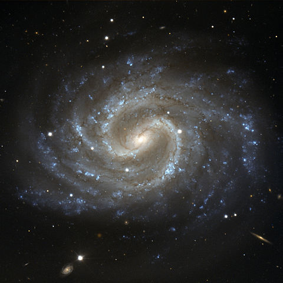

Our universe itself keeps on expanding and expanding, In all of the directions it can whiz; As fast as it can go, that's the speed of light, you know, Twelve million miles a minute and that's the fastest speed there is. So remember, when you're feeling very small and insecure, How amazingly unlikely is your birth; And pray that there's intelligent life somewhere out in space, 'Cause there's bugger all down here on Earth!